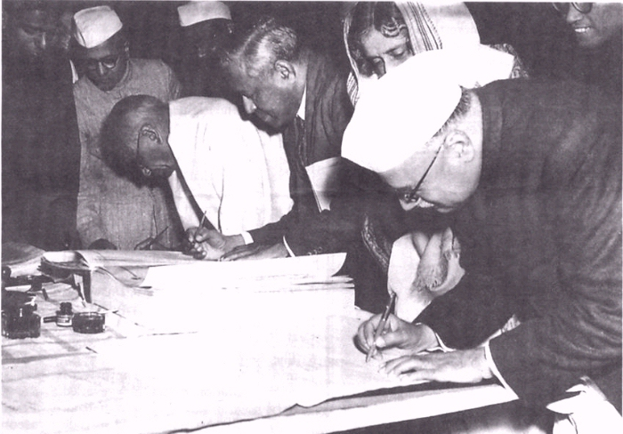

May-June 2000 BIBLIO
Austin's "Democratic Constitution"
Photo: Members of the Central Cabinet including
Sardar Vallabbhai Patel, John Matthai, Rajkumari Amrit Kaur and Jairamdas Daulatram
sign copies of the Constitution, 1950
